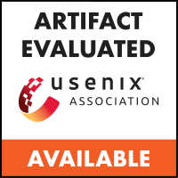
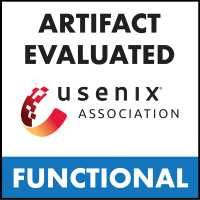
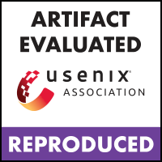

Lingyun Yang (杨凌云)
Ph.D. Candidate Department of Computer Science and Engineering, |
{kind=link}
About Me
I am a Ph.D. student in Department of Computer Science and Engineering from Hong Kong University of Science and Technology (HKUST). I am fortunate to work with Prof. Wei Wang. Before that, I received my B.Eng. degree in School of Computer Science and Engineering from South China University of Technology (SCUT) in 2020. My current research interests foucs on resource management for large-scale GPU clusters and machine learning for systems.
Contact
Office: BDI 101, University Center, HKUST
Email: lyangbk [at] cse [dot] ust [dot] hk
Education
 Ph.D., Computer Science and Engineering, Hong Kong University of Science and Technology, 2020 – Present
Ph.D., Computer Science and Engineering, Hong Kong University of Science and Technology, 2020 – Present B.Eng., Computer Science and Engineering, South China University of Technology, 2016 – 2020
B.Eng., Computer Science and Engineering, South China University of Technology, 2016 – 2020
Experience
 Research Intern, Alibaba Group, Dec. 2020 – Present
Research Intern, Alibaba Group, Dec. 2020 – Present Research Intern, Microsoft Research Asia (MSRA), Jul. 2019 – Jun. 2020
Research Intern, Microsoft Research Asia (MSRA), Jul. 2019 – Jun. 2020
Publications
[ATC ’23] Beware of Fragmentation: Scheduling GPU-Sharing Workloads with Fragmentation Gradient Descent
Qizhen Weng*, Lingyun Yang*, Yinghao Yu, Wei Wang, Xiaochuan Tang, Guodong Yang, Liping Zhang (*Co-first authors)
[paper][poster][code][trace][bibtex][usenix]
  [SoCC ’22] Workload Management in Alibaba Clusters: The Good, the Bad, and the Ugly
Yongkang Zhang, Yinghao Yu, Wei Wang, Qiukai Chen, Jie Wu, Zuowei Zhang, Jiang Zhong, Tianchen Ding, Qizhen Weng, Lingyun Yang, Cheng Wang, Jian He, Guodong Yang, and Liping Zhang
[paper][bibtex][doi][SoCC ’21] Morphling: Fast, Near-Optimal Auto-Configuration for Cloud-Native Model Serving
Luping Wang*, Lingyun Yang*, Yinghao Yu, Wei Wang, Bo Li, Xianchao Sun, Jian He, and Liping Zhang (*Co-first authors)
[paper][code][bibtex][doi]
Selected Honors
Postgraduate Scholarship, HKUST, 2020 – Present
Star of Tomorrow Internship Award of Excellence, MSRA, 2020
National Scholarship, China, 2019
The First Prize Scholarship, SCUT, 2017
Academic Services
Artifact Evaluation Committee: SOSP (2023), OSDI (2023), ATC (2023), MLSys (2023)
External Reviewer: INFOCOM (2022, 2023), ICDCS (2023), APSys (2021), MSN (2021), Qshine (2020)
Student Helper: APNet (2023), ICMLC & ICWAPR (2018)
Teaching Assistant
CSIT6000O: Advanced Cloud Computing (Spring 2022, Spring 2023)
COMP4651: Cloud Computing and Big Data Systems (Spring 2021, Fall 2021)
Others
I'm actively maintaining a personal website about my paper reading notes (including machine learning, systems, and other interesting stuffs) and a personal blog (in Chinese).